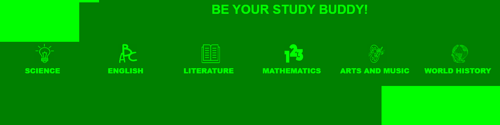
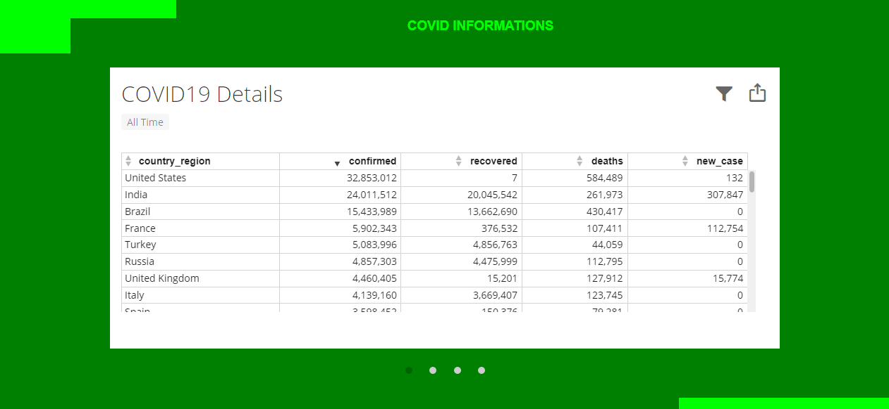

ExploreInk is an informative blog that will definitely bring us new knowledge that will feed our minds. This is designed and created to give information for every aspect, specially ein this time of pandemic.
How it differs from other blogs?
ExploreInk is not just a blog with a purpose to market, or anything. ExploreInk is not just an online journal that shares their opinion online, also, the writers aim to share information that they have learned. The readers will surely learn new things by exploring to this website, and they can share this knowledge to others. From the six different subjects that can be found on the home page, and to the blog page that has lots of topics that can help for our daily life,even you're a student or at home.
What are the contents of ExploreInk?
ExploreInk has subjects section where you can find some common topics and lesson for elementary to high school students.

In the blog sections, it has different topics that shares information that you need. It also contain informations about the Covid-19 updates.

The blogs were all about Opinion, does it still can be trusted?
The writers made sure that though this platform is an opinion based, but it is researched and from the knowledge they have gained, and only the truth will be shared in this website.